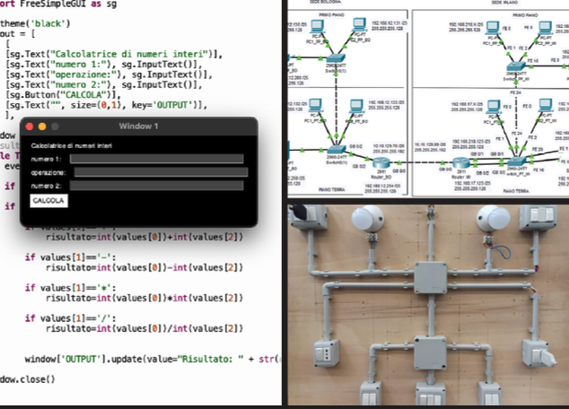

Durante questi tre anni, ho realizzato impianti elettrici civili apprendendo le basi di elettrica, ho creato programmi con linguaggio python e ho configurato reti di computer con il simulatore Cisco Paket Tracert con il quale ho avuto la possibilità di scoprire il mio interesse principale ovvero l'infrastruttura di rete.
SUCCESIVO